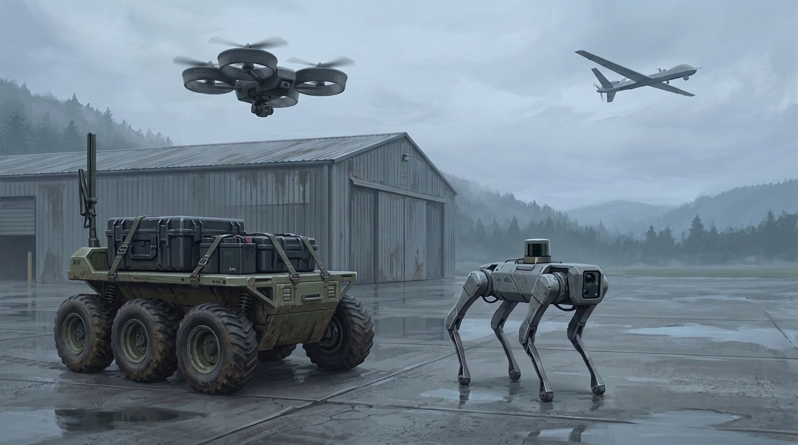

Satya TTRPG Hierarchical Skill Trees 5–8: Combat, Vehicles, Social & Tradecraft
Rust Engine Implementation:
crates/satya-engine/src/skills_trees.rs(SkillTreeId,SkillNode,evaluate_skill_prerequisites,evaluate_skill_tree_default) andcrates/satya-engine/src/skills_catalog.rs(CANONICAL_SKILL_TREES— Trees 5–8). Companion chapter to Skill System & Hierarchical Skill Trees 1–4 (skills_and_trees.md). Guided Play Example: See Guide 03 (Stealth), Guide 04 (Social Combat), Guide 05 (Melee), and Guide 06 (Firearms, Vehicles & Triage).
3.6 Tree 5: Combat — Unarmed, Melee, Firearms & Heavy Ordnance (Combat, Athletic, Technical)
This tree enforces the strict distinction between universal brawling, civilian/street weapon handling, and military/SWAT restricted ordnance, while leveraging Satya's physical and sensory characteristics:
- Unarmed & Melee: Uses Force (
FOR) and Speed (SPD) (Power = Force × Speed) for raw brawling, Kinesthesis (KIN) for martial arts footwork and grappling body control, and Dexterity (DEX) for precise blade work (see Melee Combat). - Ranged Marksmanship: Pairs Dexterity (
DEX) (trigger control and hand-eye coordination) with Sight (SIG) (visual target acquisition), Speed (SPD) (concealed fast-draw and CQB room entry), Force (FOR) (full-auto recoil control), or Focus (FOC) (long-range sniping; see Ranged Combat & Armor).
(TAL | FOR/SPD | Tier 0 — Starts N=1)
[Access: Universal]
(PHY | SPD/CRE | Tier 2)
[Access: Illicit/Street]
(PHY | SPD/KIN | Tier 2)
(PHY | KIN/FOR | Tier 2)
(PHY | KIN/DIS ≥ 10 | Tier 3)
(PHY | SPD/KIN, Min DIS ≥ 11 | Tier 3)
[Access: Restricted]
(PHY | SPD/DEX | Tier 1)
(PHY | SPD/DEX ≥ 10 | Tier 2)
[Access: Illicit/Restricted]
(PHY | FOR/KIN | Tier 2)
(PHY | SPD/KIN ≥ 10 | Tier 2)
(TAL | DEX/FOR | Tier 0 — Starts N=1)
[Access: Universal]
(PHY | DEX/DIS | Tier 2)
[Access: Restricted/Illicit]
(PHY | DEX/SIG | Tier 1)
[Access: Universal/Licensed/Illicit]
(PHY | SPD/DEX | Tier 2)
[Access: Illicit/Licensed]
(PHY | DEX/FOC, Min SIG ≥ 10 | Tier 2)
[Access: Restricted/Licensed]
(PHY | DEX/SIG | Tier 1)
[Access: Universal/Licensed/Restricted]
(PHY | SPD/DEX ≥ 10 | Tier 2)
[Access: Restricted/Illicit]
(PHY | DEX/FOR, Min FOR ≥ 10 | Tier 2)
[Access: Restricted OR Illicit ONLY]
(PHY/KNO | DEX/FOC, Min SIG ≥ 12 | Tier 3)
Req: Long Guns ≥ 3, Trigonometry ≥ 2, DIS ≥ 11
[Access: Restricted]
(PHY/KNO | DEX/ANA | Tier 3)
Req: FullAuto ≥ 2 or LongGun ≥ 2
[Access: Restricted]
(KNO/PHY | ANA/FOC | Tier 3)
Req: Heavy Weapons ≥ 2, Trigonometry ≥ 2
[Access: Restricted]
(PHY/KNO | DEX/ANA ≥ 10 | Tier 3)
[Access: Restricted]
(PHY/KNO | DEX/FOC ≥ 12, Min DIS ≥ 12 | Tier 4)
Req: Demolitions ≥ 2, Basic Electronics ≥ 2
[Access: Restricted]
| Skill Name | Type | Categories | Control (C) | Min C | Prerequisites | Access | Tools |
|---|---|---|---|---|---|---|---|
| Brawling | TAL | Combat, Athletic | FOR/SPD | — | None (Starts at N = 1) | Universal | None |
| Street Fighting & Dirty Tricks | PHY | Combat, Fieldcraft | SPD/CRE | — | Brawling ≥ 2 | Illicit | Situational |
| Boxing, Kickboxing & Striking | PHY | Combat, Athletic | SPD/KIN | SPD 9, KIN 9 | Brawling ≥ 1 | Universal | Situational |
| Wrestling, Judo & BJJ Grappling | PHY | Combat, Athletic | KIN/FOR | KIN 9, FOR 9 | Brawling ≥ 1 | Universal | None |
| Systematized Martial Arts | PHY | Combat, Athletic | KIN/DIS | KIN 10, DIS 10, SPD 10 | Striking ≥ 2 or Grappling ≥ 2 | Universal | None |
| Lethal Close-Quarters Combat (CQC) | PHY | Combat | SPD/KIN | SPD 11, KIN 11, DIS 11 | Striking ≥ 2, Grappling ≥ 2, or Knife Fighting ≥ 2 | Restricted | Situational |
| Simple Melee Weapons (Club/Knife) | PHY | Combat | SPD/DEX | — | Brawling ≥ 1 | Universal | Mandatory |
| Knife Fighting & Close Blades | PHY | Combat | SPD/DEX | DEX 10, SPD 10 | Simple Melee Weapons ≥ 2 | Illicit / Restricted | Mandatory |
| Riot Batons & Impact Weapons | PHY | Combat | FOR/KIN | FOR 9 | Simple Melee Weapons ≥ 1 | Restricted / Illicit | Mandatory |
| Fencing & Long Blades | PHY | Combat, Athletic | SPD/KIN | SPD 10, KIN 10, DEX 10 | Simple Melee Weapons ≥ 1 | Universal | Mandatory |
| Throwing | TAL | Combat, Athletic | DEX/FOR | — | None (Starts at N = 1) | Universal | Situational |
| Grenades & Thrown Explosives | PHY | Combat | DEX/DIS | DIS 9, FOR 8 | Throwing ≥ 2 | Restricted / Illicit | Mandatory |
| Pistols & Revolvers (Semi-Auto/Manual) | PHY | Combat | DEX/SIG | — | None | Universal / Licensed / Illicit | Mandatory |
| Concealed Draw & Street Shooting | PHY | Combat, Fieldcraft | SPD/DEX | SPD 10, DEX 10 | Pistols & Revolvers ≥ 2, Stealth/Concealment ≥ 1 | Illicit / Licensed / Restricted | Mandatory |
| Tactical Handgun & Point Shooting | PHY | Combat | DEX/FOC | DEX 10, SIG 10, FOC 10 | Pistols & Revolvers ≥ 2 | Restricted / Licensed | Mandatory |
| Long Guns (Rifles/Shotguns — Semi/Manual) | PHY | Combat | DEX/SIG | — | None | Universal / Licensed / Restricted | Mandatory |
| Tactical Carbine & CQB Room Entry | PHY | Combat | SPD/DEX | SPD 10, DEX 10, FOC 10 | Long Guns ≥ 2 | Restricted / Illicit | Mandatory |
| Fully Automatic Weapons & Machine Guns | PHY | Combat | DEX/FOR | FOR 10 | Long Guns ≥ 2 or Pistols ≥ 2 | Restricted or Illicit ONLY | Mandatory |
| Precision Rifle & Long-Range Sniping | PHY/KNO | Combat, Science, Fieldcraft | DEX/FOC | DEX 12, SIG 12, FOC 12, DIS 11 | Long Guns ≥ 3, Trigonometry ≥ 2, Stealth/Camo ≥ 2 | Restricted ONLY | Mandatory |
| Heavy Weapons (ATGM, MANPADS, AGL) | PHY/KNO | Combat, Technical | DEX/ANA | FOR 10, FOC 10, ANA 9 | Fully Automatic Weapons ≥ 2 or Long Guns ≥ 2 | Restricted (or Cartel/Paramilitary) | Mandatory |
| Indirect Fire (Mortars & Artillery) | KNO/PHY | Combat, Science, Technical | ANA/FOC | ANA 10 | Heavy Weapons ≥ 2, Trigonometry ≥ 2 | Restricted ONLY | Mandatory |
| Military Demolitions & Breaching | PHY/KNO | Combat, Technical | DEX/ANA | ANA 10, DIS 10 | Arithmetic ≥ 2 | Restricted (or Insurgent) | Mandatory |
| Explosive Ordnance Disposal (EOD) | PHY/KNO | Combat, Technical, Science | DEX/FOC | DEX 12, FOC 12, DIS 12, TAC 11, ANA 11 | Military Demolitions ≥ 2, Basic Electronics ≥ 2 | Restricted ONLY | Mandatory |
IMPORTANTWhy Precision Rifle / Sniping Uses
DEX/FOC(withSIG >= 12, DIS >= 11and Trigonometry ≥ 2): Shooting a rifle at 50 meters uses Long Guns (DEX/SIG). Engaging a target at 1,200 meters requires Sight (SIG >= 12) to resolve the target, Trigonometry & Pre-Calculus (N >= 2) (ANA/INS) to compute milliradian holdovers, Coriolis drift, and high-angle cosine corrections, Discipline (DIS >= 11) to remain motionless for hours, and Dexterity + Focus (DEX/FOC) to break the trigger between heartbeats. Similarly, controlling an automatic rifle or sear-modified machine pistol requires Force (FOR >= 10) (DEX/FOR) and[Access: Restricted or Illicit].
3.7 Tree 6: Athletics, Vehicles, Aviation & Drone Operations (Athletic, Technical, Fieldcraft)

Athletics and vehicle handling directly showcase Fitness (FIT), Speed (SPD), Force (FOR), and Kinesthesis (KIN) (body awareness in 3D space—essential for parkour, gymnastics, motorcycles, and rotary-wing VTOL aircraft; see Movement, Encumbrance & Vehicles).
(PHY | DEX/SIG | Tier 1)
(PHY | SPD/DEX ≥ 11 | Tier 2)
[Access: Restricted/Illicit]
(PHY | DEX/FOC | Tier 2)
(PHY | KIN/SPD ≥ 10 | Tier 1)
(PHY | DEX/INS | Tier 1)
(PHY/KNO | DEX/SIG | Tier 1)
(PHY/KNO | FOC/ANA, Min FOC ≥ 11 | Tier 3)
[Access: Restricted/Illicit]
(PHY/KNO | DEX/FOC ≥ 11 | Tier 3)
Req: Trigonometry ≥ 2, Physics ≥ 1
[Access: Licensed/Restricted]
(PHY/KNO | KIN/DEX ≥ 12, FOC ≥ 11 | Tier 4)
Req: Trigonometry ≥ 2, Physics ≥ 1
[Access: Licensed/Restricted]
| Skill Name | Type | Categories | Control (C) | Min C | Prerequisites | Access | Tools |
|---|---|---|---|---|---|---|---|
| Running | TAL | Athletic | FIT/SPD | — | None (Starts at N = 1) | Universal | None |
| Jumping | TAL | Athletic | FOR/KIN | — | None (Starts at N = 1) | Universal | None |
| Climbing | TAL | Athletic, Fieldcraft | FOR/KIN | — | None (Starts at N = 1) | Universal | Situational |
| Swimming | TAL | Athletic, Fieldcraft | FIT/KIN | — | None (Starts at N = 1) | Universal | None |
| Sprinting & Distance Conditioning | PHY | Athletic | FIT/SPD | FIT 10 | Running ≥ 2 | Universal | None |
| Parkour & Urban Free-Running | PHY | Athletic, Fieldcraft | KIN/SPD | KIN 11, SPD 10, FOR 10 | Running ≥ 2, Jumping ≥ 2, Climbing ≥ 2 | Universal / Illicit | None |
| Technical Mountaineering & Rappelling | PHY | Athletic, Fieldcraft | FIT/FOR | FOR 10, FIT 10, KIN 10, DIS 10 | Climbing ≥ 2 | Universal / Restricted | Mandatory |
| SCUBA & Combat Diving | PHY/KNO | Athletic, Fieldcraft | FIT/DIS | FIT 10, DIS 10, KIN 9 | Swimming ≥ 2, General Physical Science ≥ 1 | Licensed / Restricted | Mandatory |
| Acrobatics, Gymnastics & Escape | PHY | Athletic | KIN/DEX | KIN 12, SPD 10 | Jumping ≥ 2 | Universal / Illicit | None |
| Ground Vehicle (Civilian Auto) | PHY | Technical | DEX/SIG | — | None | Universal | Mandatory |
| High-Speed Pursuit & Evasive Driving | PHY | Technical, Combat | SPD/DEX | SPD 11, DEX 11, SIG 10, FOC 10 | Ground Vehicle ≥ 2 | Restricted / Illicit | Mandatory |
| Heavy Commercial & Armored Vehicles | PHY | Technical | DEX/FOC | DEX 9, SIG 9 | Ground Vehicle ≥ 2 | Vocational / Restricted | Mandatory |
| Motorcycle & Light Urban EV | PHY | Technical, Athletic | KIN/SPD | KIN 10, SPD 10 | None | Universal / Illicit | Mandatory |
| Watercraft & Small Boat Handling | PHY | Technical, Fieldcraft | DEX/INS | — | Swimming ≥ 1 | Universal / Vocational | Mandatory |
| Consumer UAV & FPV Drone Operation | PHY/KNO | Technical, Cyber | DEX/SIG | DEX 10 | Digital & AI Literacy ≥ 1 | Universal | Mandatory |
| Tactical Recon, Swarm & Loitering Munition | PHY/KNO | Combat, Technical, Cyber | FOC/ANA | FOC 11, ANA 10, DEX 10 | Consumer UAV ≥ 2 | Restricted / Illicit | Mandatory |
| Fixed-Wing Aviation | PHY/KNO | Technical | DEX/FOC | DEX 11, FOC 11, ANA 11, SIG 10 | Trigonometry ≥ 2, Classical Physics ≥ 1 | Licensed / Restricted | Mandatory |
| Rotary-Wing & Tiltrotor VTOL Aviation | PHY/KNO | Technical | KIN/DEX | KIN 12, DEX 12, FOC 11, ANA 11 | Trigonometry ≥ 2, Classical Physics ≥ 1 | Licensed / Restricted | Mandatory |
3.8 Tree 7: Social, Influence, Interrogation & Psychological Warfare (Social, Knowledge, Fieldcraft)
Social skills leverage Satya's six distinct Social Primary Characteristics—Comeliness (COM) (physical beauty), Presence (PRE) (silent charisma and command authority), Eloquence (ELO) (verbal articulateness), Social Savvy (SAV) (reading room dynamics, pecking orders, and leverage), Bearing (BEA) (composure, poise, and social camouflage), and Warmth (WRM) (sincere disarming empathy)—paired with Insight (INS), Intuition (ITU), Analysis (ANA), Creativity (CRE), Memory (MEM), Discipline (DIS), and Focus (FOC) (see Psyche, Morale & Social Combat).
(TAL | WRM/ELO | Tier 0 — Starts N=1)
[Access: Universal]
(TAL | ELO/ANA | Tier 0 — Starts N=1)
[Access: Universal]
(TAL | ELO/BEA | Tier 0 — Starts N=1)
[Access: Universal]
(TAL | PRE/DIS | Tier 0 — Starts N=1)
[Access: Universal]
(TAL | SAV/ITU | Tier 0 — Starts N=1)
[Access: Universal]
(PHY/SOC | COM/WRM ≥ 9 | Tier 2)
Req: Charm ≥ 2, Deception or Empathy ≥ 2
(KNO/SOC | PRE/MEM | Tier 2)
Req: Charm ≥ 2 or Persuasion ≥ 2
(KNO/SOC | SAV/BEA ≥ 8 | Tier 2)
Req: Intimidation ≥ 1 or Deception ≥ 1
[Access: Illicit/Restricted]
(KNO/SOC | BEA/CRE ≥ 9 | Tier 2)
Req: Deception ≥ 2, Charm ≥ 2
[Access: Illicit/Restricted]
(KNO/SOC | ELO/SAV ≥ 10 | Tier 2)
Req: Persuasion ≥ 2, Empathy ≥ 2
(KNO/SOC | ELO/PRE ≥ 10 | Tier 2)
Req: Persuasion ≥ 2, Writing ≥ 2
(KNO/SOC | PRE/DIS ≥ 10, INS ≥ 10 | Tier 3)
Req: Persuasion ≥ 2 or Intimidation ≥ 2
[Access: Restricted/Illicit/Licensed]
(KNO/SOC | INS/ELO ≥ 11 | Tier 3)
Req: Empathy ≥ 2, Charm or Persuasion ≥ 2
[Access: Restricted/Licensed]
(KNO/SOC | SAV/PRE, Min SAV 10, DIS 10 | Tier 3)
Req: Intimidation ≥ 2, Empathy ≥ 2
[Access: Restricted OR Illicit ONLY]
(KNO/SOC | DIS/FOC ≥ 12 | Tier 3)
Req: Deception ≥ 2
[Access: Restricted OR Illicit ONLY]
(KNO/SOC | CRE/INS ≥ 12 | Tier 4)
Req: Oratory ≥ 2, AI Synth-Media ≥ 2
[Access: Restricted/Illicit]
| Skill Name | Type | Categories | Control (C) | Min C | Prerequisites | Access | Tools |
|---|---|---|---|---|---|---|---|
| Charm & Rapport | TAL | Social | WRM/ELO | — | None (Starts at N = 1) | Universal | None |
| Persuasion & Rhetoric | TAL | Social | ELO/ANA | — | None (Starts at N = 1) | Universal | None |
| Deception & Fast-Talk | TAL | Social, Fieldcraft | ELO/BEA | — | None (Starts at N = 1) | Universal | None |
| Intimidation & Coercion | TAL | Social, Combat | PRE/DIS | — | None (Starts at N = 1) | Universal | Situational |
| Empathy & Read Person | TAL | Social | SAV/ITU | — | None (Starts at N = 1) | Universal | None |
| Seduction & Honey-Trap Tradecraft | PHY/KNO | Social, Fieldcraft | COM/WRM | COM 9, WRM 9 | Charm & Rapport ≥ 2, Deception ≥ 2 or Empathy ≥ 2 | Universal / Restricted / Illicit | Situational |
| Etiquette, High Society & Corporate Protocol | KNO | Social, Knowledge | PRE/MEM | — | Charm & Rapport ≥ 2 or Persuasion ≥ 2 | Universal / Academic / Licensed | Situational (Wardrobe) |
| Streetwise & Gang Protocol | KNO | Social, Knowledge, Fieldcraft | SAV/BEA | SAV 8 | Deception ≥ 1 or Intimidation ≥ 1 | Illicit / Restricted (Vice/Gang Unit) | None |
| Con Artistry, Disguise & Impersonation | KNO | Social, Fieldcraft, Cyber | BEA/CRE | BEA 9, CRE 9 | Deception ≥ 2, Charm & Rapport ≥ 2 | Illicit / Restricted | Situational (Props/Spoofer) |
| Diplomacy, Mediation & High-Stakes Negotiation | KNO | Social, Knowledge | ELO/SAV | ELO 10, SAV 10 | Persuasion ≥ 2, Empathy ≥ 2 | Academic / Licensed / Restricted | None |
| Public Speaking, Oratory & Media Spin | KNO | Social, Artistic, Knowledge | ELO/PRE | ELO 10, PRE 10 | Persuasion ≥ 2, Writing ≥ 2 | Universal / Academic | Situational |
| Leadership, Command & Small-Unit Tactics | KNO | Social, Combat, Knowledge | PRE/DIS | PRE 10, DIS 10, INS 10 | Persuasion ≥ 2 or Intimidation ≥ 2, Observation ≥ 2 | Restricted / Illicit (Shot-Caller) / Licensed | Situational (Comms) |
| Investigative Interviewing & Subtle Elicitation | KNO | Social, Fieldcraft, Knowledge | INS/ELO | INS 11, ELO 10 | Empathy ≥ 2, Charm ≥ 2 or Persuasion ≥ 2 | Restricted / Licensed (Detective/Reporter/Spy) | Situational |
| Coercive Interrogation & Psychological Breaking | KNO | Social, Fieldcraft | SAV/PRE | SAV 10, DIS 10 | Intimidation ≥ 2, Empathy ≥ 2 | Restricted or Illicit ONLY | Situational (Biometric/Polygraph -2) |
| Counter-Interrogation & Resistance (SERE) | KNO | Social, Fieldcraft | DIS/FOC | DIS 12, FOC 11 | Deception ≥ 2 | Restricted or Illicit ONLY | None |
| Psychological Operations (PsyOps) & Disinformation | KNO | Social, Cyber, Knowledge | CRE/INS | CRE 11, INS 12, ELO 10 | Public Speaking ≥ 2, AI 2.0 Synth-Media ≥ 2 | Restricted / Illicit | Mandatory (Media/Botnet) |
NOTEElicitation, Coercive Interrogation & Social Combat (Psyche Resonance & Cognitive Dissonance):
- Investigative Interviewing & Subtle Elicitation (
INS/ELO) uses Charm, Empathy, pattern insight, and conversational framing to draw out secrets from a subject who does not even realize they are being interrogated (or via rapport-based detective questioning).- Coercive Interrogation & Psychological Breaking (
SAV/PRE) is used when a captive knows they are being interrogated and is actively resisting. It pits the interrogator's Interrogation (SAV/PRE) against the subject's Counter-Interrogation & Resistance (DIS/FOC, or rawDISatN = 1if untrained).- Targeting Psyche in Social Combat: As detailed in Psyche, Morale & Social Combat, social skills interact directly with the target's nine Psyche traits (
EGO,SLF,OPN,BLG,EXT,CNF,AGG,TRS,CPS).
3.9 Tree 8: Literacy, Law, Intelligence, Tradecraft & Artistic (Knowledge, Fieldcraft, Artistic)
This tree highlights the interplay of Memory (MEM) and Eloquence (ELO) in language and law, Insight (INS) and Focus (FOC) in intelligence and OSINT, Tactile (TAC) and Dexterity (DEX) in lockpicking and sleight of hand, and Hearing (HEA), Sight (SIG), Taste (TAS), Olfactory (OLF), and Creativity (CRE) across the arts.
[Access: Restricted]
[Access: Illicit/Artistic]
[Access: Illicit/Restricted/Licensed]
[Access: Illicit]
[Access: Illicit/Restricted]
[Access: Restricted/Illicit]
[Access: Illicit]
| Skill Name | Type | Categories | Control (C) | Min C | Prerequisites | Access | Tools |
|---|---|---|---|---|---|---|---|
| Native Language Speech | TAL | Knowledge, Social | ELO/MEM | — | None (Starts at N = 2 for native speakers) | Universal | None |
| Reading | KNO | Knowledge | MEM/FOC | — | Native Language Speech ≥ 1 | Universal | None |
| Writing & Composition | KNO | Knowledge, Artistic | ELO/CRE | — | Reading ≥ 1 | Universal | Mandatory |
| Foreign Language (Specific) | KNO | Knowledge, Social | MEM/ELO | — | None (Oral); Reading ≥ 1 (Literate) | Universal | None |
| History, Civics & Geopolitics | KNO | Knowledge | MEM/INS | MEM 9 | Reading ≥ 2, Writing ≥ 2 | Universal / Academic | Situational |
| Research, OSINT & Archival Analysis | KNO | Knowledge, Cyber, Fieldcraft | INS/FOC | ANA 10, FOC 10 | Reading ≥ 2, Digital Literacy ≥ 2 | Universal / Academic | Mandatory |
| Criminal Law & Procedure | KNO | Knowledge | MEM/ANA | MEM 10, ANA 10 | History & Civics ≥ 2 (or Streetwise ≥ 3 for N=1) | Academic / Restricted / Illicit | Situational |
| Civil, Corporate & Constitutional Law | KNO | Knowledge | MEM/ANA | MEM 11, ANA 11, ELO 10 | History & Civics ≥ 3, Writing ≥ 3 | Academic / Licensed (Law School) | Situational |
| Strategic Intelligence & Threat Analysis | KNO | Knowledge, Fieldcraft | INS/ANA | INS 11, ANA 11 | Research & OSINT ≥ 2, History & Civics ≥ 2 | Restricted | Mandatory |
| Observation & Awareness | TAL | Fieldcraft | SIG/HEA | — | None (Starts at N = 1; swaps to ITU/FOC by context) | Universal | Situational |
| Stealth & Sneaking | TAL | Fieldcraft, Athletic | KIN/FOC | — | None (Starts at N = 1) | Universal | Situational |
| Foraging & Campcraft | TAL | Fieldcraft | INS/OLF | — | None (Starts at N = 1) | Universal | Situational |
| Hunting, Trapping & Field Butchery | PHY/KNO | Fieldcraft, Combat | SIG/INS | SIG 9, INS 8 | Foraging & Campcraft ≥ 1, Stealth ≥ 1 | Universal / Vocational | Mandatory |
| Animal Handling, Husbandry & Riding | PHY/KNO | Fieldcraft, Athletic, Social | INS/KIN | INS 8, KIN 8 | Empathy ≥ 1 or Foraging & Campcraft ≥ 1 | Universal / Vocational | Situational |
| Wilderness Survival (Biome-Specific) | KNO/PHY | Fieldcraft | INS/HLT | INS 9, HLT 9 | Foraging & Campcraft ≥ 2 | Universal / Vocational / Restricted | Situational |
| Sleight of Hand, Palming & Pickpocketing | PHY | Fieldcraft, Artistic | DEX/TAC | DEX 11, TAC 10 | Stealth ≥ 1 | Illicit / Artistic | None |
| Lockpicking & Physical Security Bypass | PHY/KNO | Fieldcraft, Technical | DEX/TAC | DEX 10, TAC 10, FOC 9 | Basic Tool Use ≥ 1 or Sleight of Hand ≥ 1 | Illicit / Restricted / Licensed | Mandatory |
| Vehicle Hotwiring & Transponder Spoofing | PHY/KNO | Fieldcraft, Technical, Cyber | DEX/ANA | DEX 9 | Streetwise ≥ 1 or Basic Electronics ≥ 1 | Illicit / Restricted | Mandatory |
| Forgery, Counterfeiting & Identity Washing | KNO/PHY | Fieldcraft, Cyber, Artistic | DEX/CRE | DEX 10, SIG 10, FOC 10 | Writing ≥ 2, Digital Literacy ≥ 2 | Illicit / Restricted | Mandatory |
| Surveillance, Tail Craft & Counter-Surveillance | PHY/KNO | Fieldcraft | FOC/SIG | FOC 10, SIG 10, ITU 10 | Observation ≥ 2, Stealth ≥ 2 | Restricted / Illicit | Situational |
| Black Market Logistics, Smuggling & Fencing | KNO | Social, Knowledge, Fieldcraft | SAV/ELO | SAV 8, ELO 8 | Streetwise ≥ 2, Arithmetic ≥ 2 | Illicit | Situational |
| Singing & Vocal Control | TAL | Artistic, Social | HEA/ELO | — | None (Starts at N = 1; assisted by FIT) | Universal | None |
| Drawing & Visual Sketching | TAL | Artistic | DEX/SIG | — | None (Starts at N = 1; paired with CRE) | Universal | Mandatory |
| Professional Vocal Performance & Mimicry | PHY | Artistic, Fieldcraft | HEA/PRE | HEA 10, PRE 10 | Singing ≥ 2 | Universal / Artistic | Situational |
| Musical Instrument (Specific) | PHY | Artistic | DEX/HEA | DEX 9, HEA 9 | None (paired with CRE/DIS) | Universal / Artistic | Mandatory |
| Graphic Design, Sculpture & 3D Synth-Art | PHY/KNO | Artistic, Cyber | CRE/DEX | CRE 9, DEX 9, SIG 9 | Drawing ≥ 2 | Universal / Artistic | Mandatory |
| Culinary Arts & Mixology | PHY/KNO | Artistic, Technical | TAS/OLF | — | None (paired with CRE/DEX) | Universal / Vocational | Mandatory |
TIPUsing Tradecraft Skills in Play: For Observation (
Passive AWRvs.Active 6-Sense Scan), Stealth, Surveillance & Tail Craft (SDR), and Forensics, see Stealth, Passive Awareness, Observation & Investigation. For Forgery & Identity Washing, Black Market Logistics, and Streetwise favor brokering, see Contacts, Cover Identities & Safehouses.